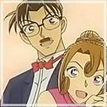

登場人物
緋色シリーズで登場する主な人物たち。説明は雑。
江戸川コナン ┃ 安室透 ┃ 赤井秀一 ┃ ジョディ・スターリング ┃ アンドレ・キャメル ┃ 澁谷夏子 ┃ 沖矢昴 ┃ ベルモット ┃ 工藤夫妻
江戸川コナン
ご存知主人公。少年探偵団のリーダー格。
天才的な頭脳の持ち主である名探偵で、幾多の難事件を持前の頭脳で解決してきた。
正体は高校生探偵･工藤新一。黒の組織の取引現場を目撃してしまったために、
組織が開発した謎の薬の作用で身体が縮んでしまった。
ぶりっコナンは最強にかわいい。抱きしめたい。
安室透

29歳(とは思えない童顔)の私立探偵。
小五郎に頼み込んで探偵としての弟子となる傍ら、
彼の事務所の階下にある喫茶店「ポアロ」でアルバイトをしている。
褐色肌に金髪タレ目の可愛すぎる童顔(大事なことだから2回言った)。
普段から赤井秀一のことを考えすぎ。好きなのか？お？どうなんだ？
赤井秀一
FBIきっての切れ者捜査官。父の死の真相を知るためにFBIに入り、黒の組織を追っている。
ベルモットを追ってFBIの仲間と共に来日した。
常に黒いニット帽を被り、喫煙者で左利き。×下まつげ ○クマ
圧倒的な雄みがある。絶対ドS。最近はバーボン一筋。
あむぴとは観覧車であんなことやこんなことをする仲(純黒)
ジョディ・スターリング
黒の組織を追って来日しているFBIの女性捜査官。28歳。
美人でスタイル抜群。かけている眼鏡は父親の形見。
正体発覚前はウマウマ言ったりするせいでベルモット疑惑が出てた。
もっとシュウやバーボンに怒っていいと思う。
カタコトニホンゴ時代も好きだよ。
アンドレ・キャメル
赤井秀一が作戦のために増員として呼び出したFBI捜査官。27歳の独身。
卓越したドライブテクニックを持っており、爆発と同時に車から飛び出せるほどの運動神経もあるなど、
赤井からも信頼されている。 「赤井しゃん！！！」
赤黒クラッシュの初登場時は黒の組織だと思った。許してヒヤシンス。
Germany版高木刑事(歩く情報漏洩)。
澁谷夏子
杯戸小学校の教師。1年生の担任。
アメリカ留学中に事件に巻き込まれ、ジョディに助けられて知り合った。
ジョディ先生に日本語を教えたのも、潜入捜査に協力したのも彼女。
なのに今回はなかなか酷い目に遭う。かわいそうだ…。
沖矢昴
東都大学大学院工学部博士課程に籍を置く27歳。いつもハイネック。
関連本を全巻揃えていたほどのシャーロキアンで、卓越した推理力を誇る。
煮込み料理しか作らない。きっとIoTテロの被害にあってる。
いつも視界どうなってるんだろうね…。
そしてたった4音の言葉で死んだ女がどれだけいるのか(異次元の狙撃手)
ベルモット
黒の組織の大幹部で本名はシャロン・ヴィンヤード。
組織のボスであるあの方のお気に入りで他の幹部よりも自由な行動が許されている。
「千の顔を持つ魔女」と呼ばれる程の変装の達人で、変声機を使わないで他人の声を出すこともできる。
シルブレくんとAngelがこの世でたった2つだけの宝物。
赤井さんに"Rotten Apple(腐った林檎)"呼ばわりされる。
工藤夫妻

工藤優作
工藤新一の父親。世界に名を響かせる推理小説家
工藤有希子
工藤新一の母親。 世界的に有名な伝説の美人女優。かわいい。とにかくかわいい。